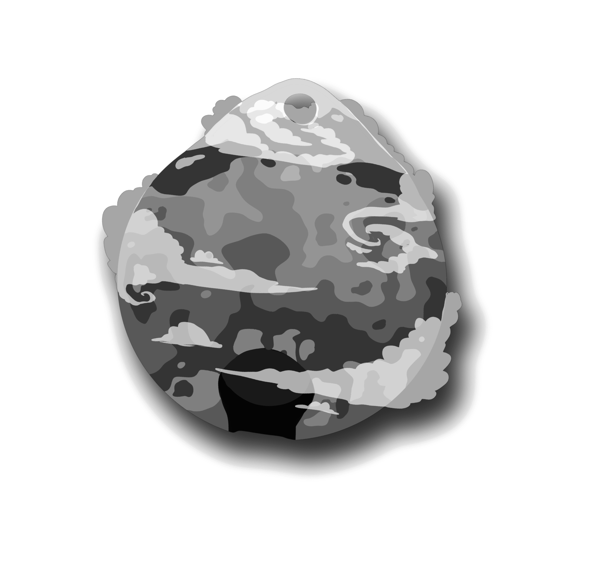

1 · Type test — the actual hero component, not an isolated sample
Same markup and CSS as the real hero on index.html — only the name's font changes between the three. Instrument Serif only exists as one weight, so "C" below is the bolder version (a thin stroke added, no distortion) rather than a real bold cut.
Interactive Designer
I design interactive experiences, design systems and AI-driven workflows — moving between UX research, game design and immersive media, from Medellín to Wellington.
Interactive Designer
I design interactive experiences, design systems and AI-driven workflows — moving between UX research, game design and immersive media, from Medellín to Wellington.
Interactive Designer
I design interactive experiences, design systems and AI-driven workflows — moving between UX research, game design and immersive media, from Medellín to Wellington.
Interactive Designer
I design interactive experiences, design systems and AI-driven workflows — moving between UX research, game design and immersive media, from Medellín to Wellington.
Interactive Designer
I design interactive experiences, design systems and AI-driven workflows — moving between UX research, game design and immersive media, from Medellín to Wellington.
Both of these are thin, fully-connected calligraphy scripts — closer in spirit to Beau Rivage (the one you said read as "a spirituality website") than to Fraunces or Instrument Serif. Worth seeing at full size regardless, in case the gradient and glow change how they feel here. Tell me which of the five you want as --font-display.
2 · Cut-out test — your globe charm, background removed

This is your globe/charm image with its white background removed — a stand-in to test the mechanic, not a real project image. Once you send a cut-out per project, it drops in exactly like this.
3 · Lotus toggle test — your real closed/open pair, now live
This is now your real matched pair (the pastel one — the neon pair you sent were two copies of the same closed bud, no open match, so I used the one that actually has both states). Closed by default; the first hover or click opens it and it stays open; the next hover or click closes it again. This exact component is now also live for real on the home page, fixed to the bottom-left corner (desktop only).
4 · Navigation — growth trail + portal paging, now both live for real
These moved out of the preview and onto the real index.html, since a sketch can't really show a scroll-tracked interaction. Open the real home page to try it: a vine of buds runs down the right edge — bloomed, current and dashed-but-clickable, exactly as sketched before. The small ✦ above it opens the portal view: the section you're on as a big circle, the other six arranged around it, each one a direct jump. Escape, the backdrop, or the × close it again.